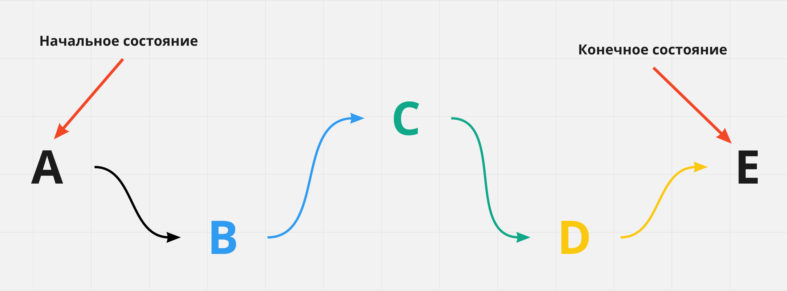

CSS-анимация
Как и переходы, анимация придаёт веб-страницам динамичность, но в отличие от переходов, анимации не нужен обязательный инициатор (событие), её можно повторить бесконечное количество раз, и между начальным и конечным состояними может быть любое количество промежуточных состояний.
Объявление анимации
Анимация объявляется директивой @keyframes, которая позволяет описать набор
кадров (frames, состояний) анимации, которых должно быть как минимум два
(начальный и конечный).
/* Имя должно быть описательным, то есть что это за анимация. */
@keyframes имяАнимации {
/* Тут будут описываться кадры */
}
Кадры определяют в какой момент времени изменяются анимируемые свойства и
описываются ключевыми словами from (псевдоним 0%) и to (псевдоним 100%) или,
чаще всего, в виде процентов в промежутке 0%-100%, так как проценты позволяют
указать произвольное значение.
/* Имя должно быть описательным, то есть что это за анимация. */
@keyframes имяАнимации {
0% {
/* Свойства для изменения */
}
/* Произвольное количество промежуточных кадров */
100% {
/* Свойства для изменения */
}
}
В анимации не указывается время или элемент, к которому она будет применяться, это значит, что одну и ту же анимацию можно использовать повторно для разных элементов.
Объявим анимацию для изменения цвета фона элемента в трёх точках: 0%, 50% и
100%.
@keyframes changeBgColor {
0% {
background-color: teal;
}
50% {
background-color: orange;
}
100% {
background-color: deepskyblue;
}
}
Свойства анимации
animation-name
Чтобы использовать уже объявленную анимацию, нужно указать её имя в качестве
значения для свойства animation-name.
.box {
animation-name: changeBgColor;
}
Анимацию можно добавить к селектору, тогда она будет применена сразу, при загрузке страницы. Также можно применить анимацию по событию, например ховеру или фокусу, используя соответствующие псевдоклассы.
. box {
/* Базовые стили элемента */
}
/* Добавляем анимацию по ховеру */
.box:hover {
animation-name: changeBgColor;
}
animation-duration
Устанавливает продолжительность анимации - время, за которое будут пройдены все кадры. Задаётся в секундах или миллисекундах. Если не задать длительность, анимация будет мгновенной.
.box {
animation-name: changeBgColor;
animation-duration: 3000ms;
}
По умолчанию анимация происходит один раз, и финальные значения анимируемых свойств не сохраняются, вместо этого элемент возвращается к своему исходному состоянию.
animation-timing-function
Устанавливает
функцию распределения времени
для анимациии, значения аналогичны transition-timing-function в CSS-переходах.
.box {
animation-name: changeBgColor;
animation-duration: 3000ms;
animation-timing-function: linear;
}
animation-delay
Устанавливает задержку перед началом анимации в секундах или миллисекундах.
.box {
animation-name: changeBgColor;
animation-duration: 3000ms;
animation-timing-function: linear;
animation-delay: 1000ms;
}
animation-iteration-count
Устанавливает количество полных повторений анимации.
.box {
animation-name: changeBgColor;
animation-duration: 3000ms;
animation-timing-function: linear;
animation-iteration-count: 5;
}
Значение может быть целым положительным числом или ключевым словом infinite -
это сделает анимацию бесконечной.
animation-direction
Контролирует направление воспроизведения анимации - от начального до конечного кадра, наоборот от конечного кадра до начального, или может быть необходимо чтобы порядок чередовался на каждом повторении.
.box {
animation-name: changeBgColor;
animation-duration: 3000ms;
animation-timing-function: linear;
animation-iteration-count: infinite;
animation-direction: alternate;
}
normal- анимация воспроизводится от начального до конечного кадра, после чего сразу возвращается в начальный кадр для следующего повторения (сбрасывается в начальное состояние). Это значение по умолчанию.reverse- анимация воспроизводится в обратном направлении, начиная от конечного кадра и до начального, после чего сразу возвращается в конечный кадр для следующего повторения.alternate- первый раз воспроизведение начинается от начального и до конечного кадра, после чего происходит изменение направления на каждом последующем повторении.alternate-reverse- первый раз воспроизведение начинается от конечного и до начального кадра, после чего происходит изменение направления на каждом последующем повторении.
animation-fill-mode
Определяет, что происходит со стилями элемента до начала анимации и после её окончания. То есть позволяет указать, должны ли стили анимации применяться к элементу вне анимации.
animation-fill-mode: none | forwards | backwards | both
none- стили анимации влияют на элемент только во время анимации. До и после анимации элемент находится в своём исходном состоянии. Значение по умолчанию.forwards- стили, применённые в конце анимации, остаются на элементе после её окончания.backwards- стартовые стили анимации будут применены к элементу ещё до старта анимации.both- совмещаетforwardsиbackwards, стили применяются до и после анимации.
animation-play-state
Позволяет приостановить воспроизведение анимации. По умолчанию задано значение
running. Если установить значение paused, например при :hover, анимация
будет приостановлена пока курсор мыши находится над элементом.
Свойство animation
Составное свойство позволяет более кратко записать свойства анимации.
animation: [name] [duration] [timing-function] [delay] [iteration-count] [direction] [fill-mode] [play-state]
Значения необязательных свойств можно пропустить или поменять местами.
Исключение составляют свойства duration и delay - значение длительности
анимации всегда должно указываться до задержки.
.box {
animation: magic 2s infinite;
}
.box {
animation: magic 2s 0.5s ease-in-out;
}
.box {
animation: magic 2s ease-in-out 0.5s forwards;
}
.box {
animation: magic 2s forwards infinite ease-out 0.5s;
}
@keyframes magic {
/* ... */
}